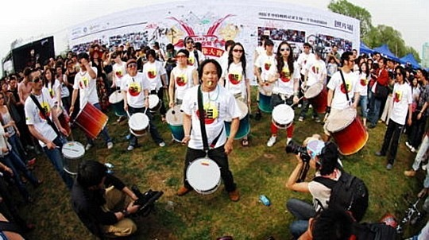

 桑巴亚北京2周岁了！唯一给我发了MOSH上活动的信息。 我们去过桑巴亚一次，其实是两次。一次在他们的798那边的工作室门口站了很久看了他们的排练。由于他们练起来时间特别长，中间很少中断，所以一直没好意思进去。第二次和唯一打了声招呼，终于去感受了一次。一个下午的排练非常充实，当时没有老师，也没人管你是不是新来，大家一上去就开始合练，弄得我们很紧张，还好我们打的是相对容易的打鼓。和我们一起去的还有几个新人，大家抱着“就敲吧”的心态硬着头皮跟上集体合练。中间交流很少，后来有些新人主动要求带队的讲讲，因为我们什么都不知道，气氛才稍微好了点。 一个下午的练习挺长挺充实，可惜798离我们实在有点远。我又是很怕跑路的人，加上种种原因，后来就没有再去过。而桑巴亚过了这两年，可是越来越壮大，也被更多的人所认识，参加了许多大小演出。2006年的MIDI，我们是循例去看看，但乐队的安排实在也很难让人幸福起来。那时造成最大反响的就是桑巴亚进去了MIDI，在主舞台旁表演。旁边还有几个老外自发的几个人打鼓，这两拨人把观众从主舞台硬是拉了过去，是当年相对沉闷的MIDI音乐会上的亮点。 其实从小就喜欢打鼓，小学时在学习仪仗队里玩小鼓还是很过瘾。非洲和巴西的鼓曲，更是有一种很原始的自由在里面，很有感染力。祝桑巴亚有更好的未来！虽然我们已经不去了，但是还是希望在各位有兴趣的北京朋友，值得去参与。现在相比以前，可是有教学的了，管理上也应该好很多，所以是要收费的了。如果你能负担得起，又有时间，推荐大家去玩玩。 mosh上的活动介绍地址：http://event.mosh.cn/view/29256/
{kind=link}
[基本信息]
- 开始时间：04月22日周二 20:30 结束时间：04月22日周二 23:30
- 活动地点：MAO LIVE HOUSE ( 北京 东城区 鼓楼东大街111号（南锣鼓巷北出口对面） 电话：64027959)
- 费用估计：每人 0-50 元 预售门票20块 /现场门票30块
[活动内容]
桑巴亚北京2周岁了！ 我们将于4月22号（周二） 在MAO演出与大家一起庆祝两岁的生日。这次的生日演出会带来新的曲目，同台表演的还有我们的舞者，与特邀嘉宾杭盖乐队也会有精彩的合作。 演出后在对面的PAPER 餐吧举行After- Party,欢迎大家来参加。 PAPER 餐厅/酒吧地址： 东城区鼓楼大街 138号 电话：84015080